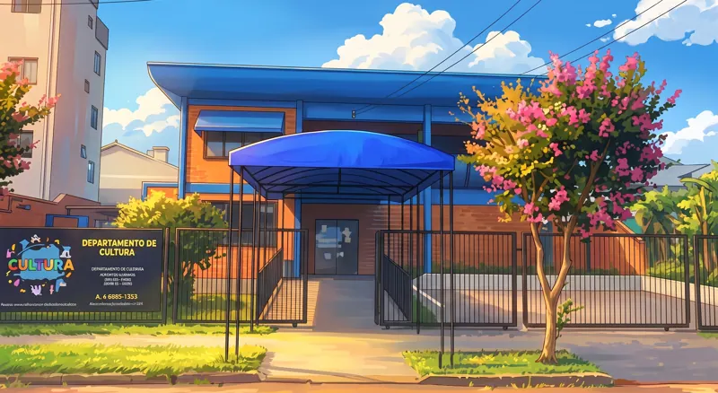

Conhecer o espaço →Departamento de Cultura
O principal espaço de gestão, fomento e realização de atividades artísticas e culturais de Palotina.
ENDEREÇO
Rua Eurico Gaspar Dutra, 706 — Centro
Palotina — PR
ATENDIMENTO
7h30 às 11h30 · 13h30 às 17h30
Publicações da Cultura 2
Conheça o Departamento de Cultura
📍✨ O Departamento de Cultura tem endereço certo! O Departamento de Cultura está de portas abertas para você! Venha conhecer, participar e valorizar a arte e a cultura da nossa cidade. 📌 Rua Eurico Gaspar Dutra, 706 – Centro Nossa cultura, nossa identidade! 🎭🎶📚
Ver publicação no Instagram →Publicações deste espaço
Conheça o Departamento de Cultura
📍✨ O Departamento de Cultura tem endereço certo! O Departamento de Cultura está de portas abertas para você! Venha conhecer, participar e valorizar a arte e a cultura da nossa cidade. 📌 Rua Eurico Gaspar Dutra, 706 – Centro Nossa cultura, nossa identidade! 🎭🎶📚
Ver publicação no Instagram →Fale com a Cultura pelo WhatsApp
✨ Agora ficou ainda mais fácil participar das nossas atividades culturais! A Cultura agora tem WhatsApp 📲💚 Quer saber sobre oficinas, cursos, eventos ou tirar dúvidas? É só chamar! 📞 (44) 3913-1131 Estamos prontos para te atender!
Ver publicação no Instagram →